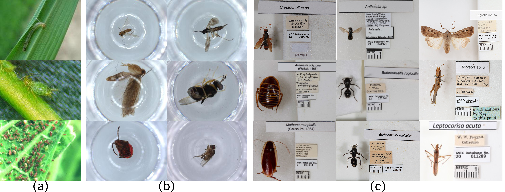

Recognizing an insect species is only one part of understanding a specimen. Natural history collections also preserve anatomical evidence and records of where, when and how specimens were collected. InSpect connects visual morphology, collection context and anatomical parts in a single evaluation framework.
1. Why natural history collections?


Learning from real collection images
Digitized natural history collections create opportunities to support specimen identification, taxonomic curation and biodiversity research. Their images also present practical challenges: backgrounds, illumination, framing and specimen scale vary, and the insect often appears alongside physical labels.
InSpect is curated from the Australian National Insect Collection (ANIC), retaining this natural variation. It provides aligned insect crops so that models can be evaluated on the visual evidence in the specimen itself.
Separating morphology from label-derived context
A label can contain the very taxonomic name that a recognition model is asked to predict. Using the full collection image would allow a model to read that name instead of recognizing the insect. InSpect therefore uses cropped specimen images for recognition and segmentation, while extracting the label information separately into a structured record.
For metadata-based recognition, direct taxonomic fields are removed from the input. Remaining records, such as locality and collection date, provide weak contextual cues. These records are incomplete and unevenly available, making it possible to study when context helps visual recognition and when it introduces noise or shortcuts.
2. Why go beyond taxon prediction?
Recognizing taxa beyond the training set
In biodiversity applications, rare or previously unseen taxa can appear at test time. Strong accuracy on a fixed set of training categories does not establish that a model can handle these cases.
InSpect includes both seen and held-out taxa, and evaluates zero-shot and fine-tuned recognition with images, metadata, or their combination. The experiments show a persistent gap between strong closed-set classification and fine-grained open taxonomic recognition. Metadata can help, but its benefits vary across evaluation splits and metrics.
Understanding parts, not only species
Antennae, legs, wings and body regions provide evidence for describing insect form and comparing morphological variation. Whole-specimen masks do not measure whether a model can distinguish these structures.
InSpect provides 1,859 images with fine-grained anatomical part masks, including coarse and spatial-aware labels. Supervised and text-guided segmentation benchmarks test whether models can localize these parts. Small, thin and overlapping structures remain particularly challenging, even when fine-tuning improves the overall predictions.
These complementary tasks make InSpect a benchmark for specimen understanding beyond taxon prediction: identifying an insect, using its collection context, and localizing the anatomical evidence that describes its form.